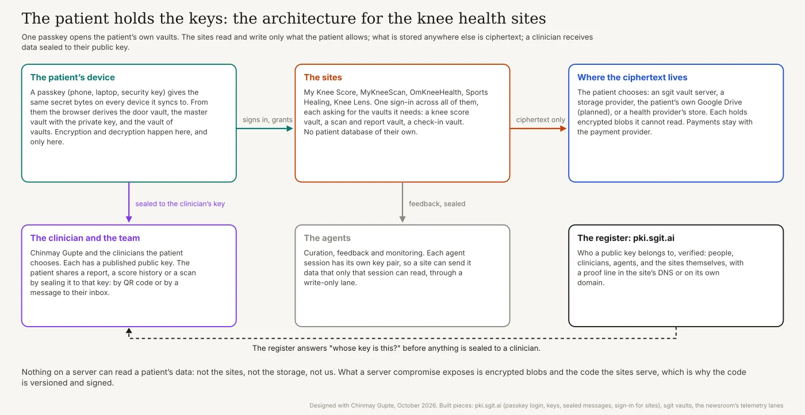
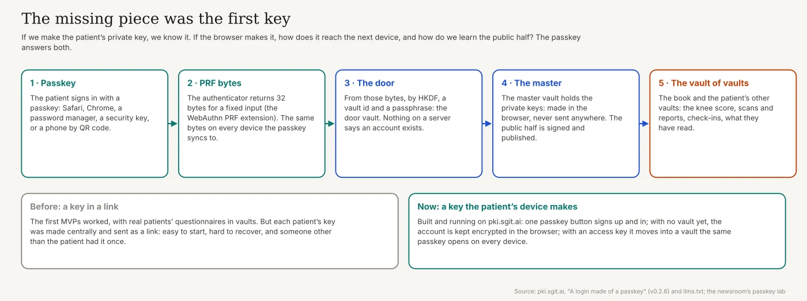
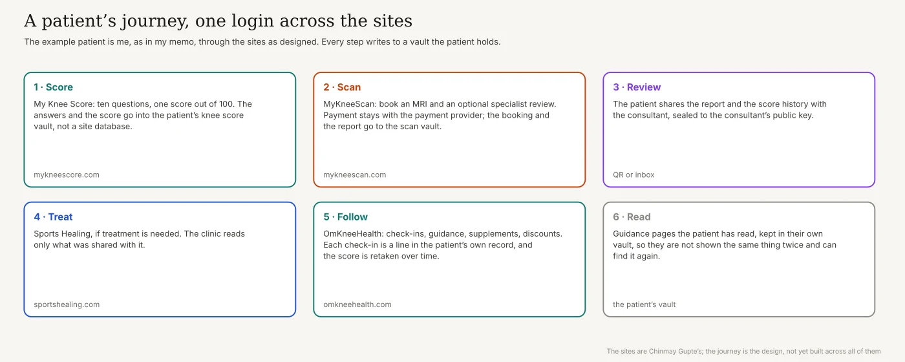
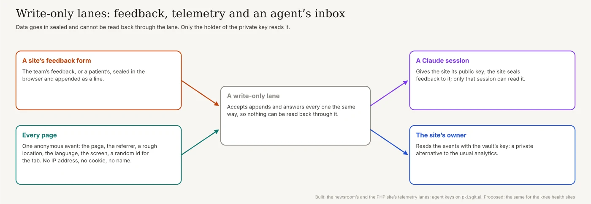
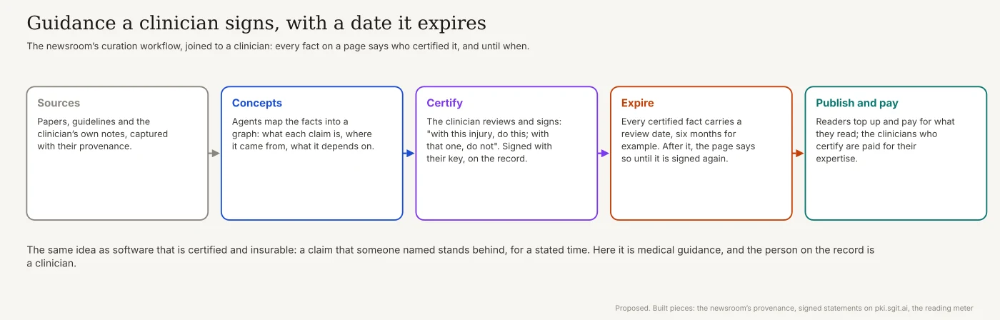
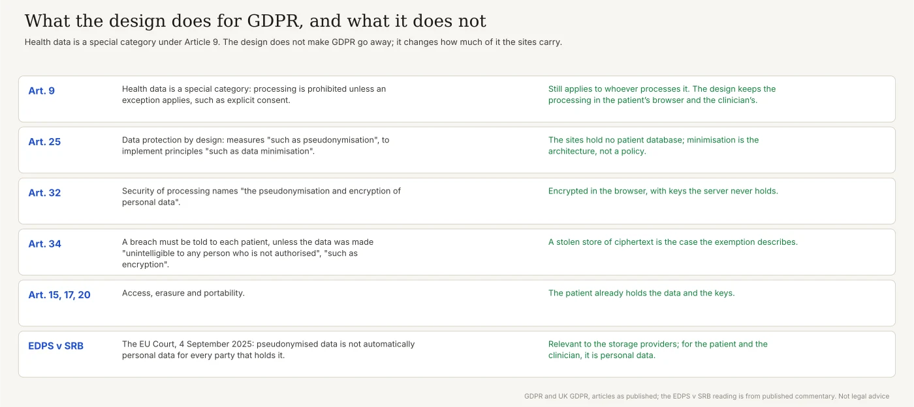
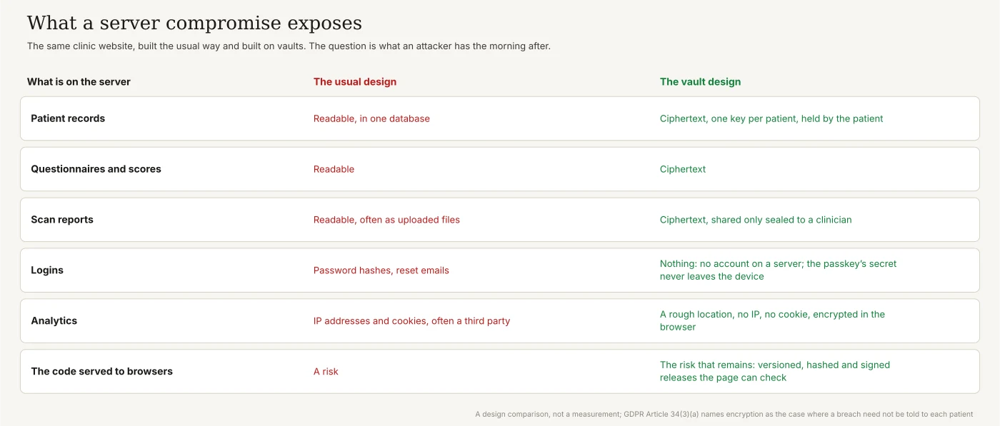

Home / The patient holds the keys: vaults, passkeys and PKI for Chinmay Gupte's knee health sites, a design with no server-side store of sensitive data
Review draft · 2026-10-26
The patient holds the keys: vaults, passkeys and PKI for Chinmay Gupte's knee health sites, a design with no server-side store of sensitive data
Review draft. Not linked from the home page or the article list, and not yet reviewed by Chinmay Gupte. Everything below is marked as built, designed or proposed.

In short
- Vaults are already in production here. Our MVPs stored real patients' knee questionnaires in sgit vaults.
- The missing piece was the first key. Now a passkey gives it, on every device, and nobody else ever holds it.
- The patient holds the keys. The sites keep no patient database; whatever is stored centrally is ciphertext.
- One sign-in across the sites, each asking only for the vaults it needs.
- A clinician gets data sealed to their public key, by QR code or by an inbox.
- The same lanes carry feedback, private analytics and an agent's inbox.
- Guidance a clinician signs, with an expiry date, and readers who pay for it.
- GDPR gets easier, not optional. A stolen store of ciphertext is the case the law already describes.
- Next: a small MVP. One login across two sites, and the team's feedback.
The project
Chinmay Gupte is a consultant knee surgeon in London and a clinical reader at Imperial College. I wrote about the project in the expert founders: a specialist building the product their own patients need. It is a family of sites, each doing one thing:
- My Knee Score: "Ten questions about pain, movement and daily life. One score out of 100."
- MyKneeScan: private knee MRI scans at an imaging centre on Harley Street, "Scans from £550", with an optional specialist review of the report.
- OmKneeHealth: "a clinically led platform dedicated exclusively to knee health": guidance, supplements, products, and a Knee + Sleep Score that is "calculated in your browser".
- Sports Healing: the clinic, for when treatment is needed.
What a patient gets today is what most of us get: useful pieces that do not talk to each other, and very little follow-up. What Chim wants is a service that follows the patient, from the first score to the scan, the review, the treatment and the check-ins, without the sites becoming a store of sensitive data. Health data is a special category under data protection law, and Chim wants to do the right thing with it. So do I.
What already runs
We started a couple of months ago with MVPs on sgit vaults, and they worked well: patients filled in knee questionnaires, and their answers were stored in vaults, encrypted in the browser. The problem was onboarding. Each patient's key was created centrally and had to be sent to them: we onboarded patients with a link carrying their key, opened in the browser. The experience was good. But a key made centrally is a key someone other than the patient held, even once; and a key made in the browser raised two questions I could not answer well: how does it get to the patient's next device, and how do we learn its public half?
The missing piece was the first key

This is the dot that connects the rest. A passkey is something the patient already has, in Safari, Chrome, a password manager or a security key, and the browser can ask it for a secret that never leaves the device. pki.sgit.ai already runs the whole chain, in its own words:
- The passkey. "Sign in with a passkey": one button that signs up and in.
- Its PRF bytes. The authenticator returns 32 bytes for a fixed input, through the WebAuthn PRF extension; a passkey that syncs (iCloud Keychain, Google Password Manager) gives the same bytes on every device.
- The door. From those bytes, by HKDF, a vault id and a passphrase. "There is nothing on a server that says an account exists."
- The master. A vault that holds the private keys, made in the browser, byte-compatible with
sgit pki. The public half is published as a signed statement in the register. - The vault of vaults. The patient's other vaults hang from the master: for the knee health sites, a knee score vault, a scan and report vault, a check-in vault.
The passkey lab on this newsroom shows the same derivation step by step, including a recovery code. What remains is making it work on every device and browser the patients use; some flows, such as signing in on a laptop with a phone by QR code, still need ironing out.
A patient's journey

Take me as the patient. I have a knee problem; I take my supplements; I want to know I am doing the right thing. On My Knee Score I sign in with my passkey and answer the ten questions; the answers and the score go into my knee score vault. On MyKneeScan I book an MRI; the payment goes to the payment provider, the only place that holds something about me in the clear, and the booking and later the report go into my scan vault. I share the report and my score history with the consultant, sealed to their key. If I need treatment, Sports Healing reads only what I shared with it. On OmKneeHealth I check in, retake the score over time, get guidance, and find discounts on what I buy. And what I have read stays in my own vault, so I am not shown the same article twice and can find it again.
Who stores the data, and who pays
The data is always encrypted in the patient's browser. Where the ciphertext lives is a choice, and we still have to get the experience right:
- An sgit vault server, run by us or by a provider that wants to offer the service.
- The patient's own cloud storage. I am about to add sign-in with Google, which would let a patient keep their vaults in their own Google Drive. Proposed.
- A dedicated health provider, if one wants to offer encrypted storage to patients.
Each holds blobs it cannot read. The open question is the business one: who pays for the storage, the patient, the sites or a provider. The point of the passkey is that it makes all of these possible: once the patient has a key, connecting another service is a login signed with that key.
One sign-in across the sites
The sites should feel like one service. pki.sgit.ai already offers sign-in for other sites: a site redirects to pki.sgit.ai, and the person signs a delegation with their own key for one browser key at one site. It can be soft (signed, until a date) or strong (valid only while the person's record lists it: "withdraw it and it stops, no revocation list"). On top of that we are finishing the familiar authorisation step: when you arrive at a site, it asks which of your vaults it may read and write, and you decide.
The sites themselves get keys too. The register already accepts a proof line in a domain's DNS (a TXT record at _pki.sgit.ai.<domain>) or at /.well-known/pki.sgit.ai.txt, so a patient's browser can check that the site asking for their data is really mykneescan.com before it hands anything over. Planned for the main sites.
Sharing with a clinician
The patient decides who sees what. Every clinician on the team has a published public key in the register. To share a scan report or a score history, the patient's browser seals it to that key: either as a QR code, which also works in person, in the consulting room; or as a message to the clinician's inbox, a write-only lane only their key can read. The sealed message format is the register's own, and sgit pki decrypt opens it.
The QR workflow is a good one in the other direction too. When a patient signs up, they can send their public key to the team as a QR code, and the team uses it to open a private channel between clinician and patient. After that, it is logistics: what to share, and where the shared data lives. In the patient's vault, in a vault just for that clinician and that patient, in the clinician's own vault, or anonymised, for research. Each is a choice the patient makes, and can see.
Lanes: feedback, analytics and an agent's inbox

Three things we already use fit the same shape:
- Feedback. I have Claude agents with their own vault, which receive appended lines from a website. For the MVP, the team can give feedback on the sites the same way.
- An agent's inbox. Ask a Claude session for its public key, give it to the website, and the website can send data that only that session can read. The agents' identities are already in the register: identities for agents, operated by a person, with an end date. Earlier today, the agent writing this sealed four vault keys to a public key and handed them over as a QR code.
- Analytics without IP addresses. This newsroom's telemetry, and the PHP story site's, send one anonymous event per page: the page, the referrer, a rough location (a country and a city, from a lookup), the language, the kind of screen and a random id for the tab. "No IP address, no cookie, no name." It is encrypted in the browser and appended to a write-only lane. If a patient agrees, an id could join their events to their account; better still, their reading history belongs in their own vault.
Guidance a clinician signs

Chim has a lot of sites, and the strategy is to have many more: specific, deep guidance on narrow topics that the web covers badly. They should work like this newsroom does. The curation workflow maps the sources and their provenance, the concepts, the projections and the transformations; for medical guidance it adds one step. A fact is on the page because a clinician said it is correct: "if you have this injury, do this; if you have that one, do not". The clinician signs it with their key, on the record, the same idea as signed by the source and as software that is certified and insurable. And every certified fact expires: a piece of guidance may be good for six months, and after that the page says it is due for review until someone signs it again.
The sites should also follow this newsroom's business model: readers top up and pay for what they read, and they keep the meter. That gives the sites a revenue stream that funds writing more of them, and it pays the experts for the expertise they certify. Proposed.
Behaviour policies
At a later stage, the workflows get the controls this newsroom and RiskMandate already use: agent behaviour policies for what each agent and each site may reach, process behaviour policies for what a process may do on the machine, and decision policies for what needs a person's approval, joined up as approved business mandates. In a clinical setting they are how we show, not only say, that an agent curating guidance cannot read a patient's data. Proposed for this project.
GDPR: what the design does, and does not

Health data is a special category: under Article 9, processing "data concerning health" is prohibited unless an exception applies. The design does not change that for whoever processes it. What it changes is how much of the regulation the sites carry:
- By design, not by policy. Article 25 asks for measures "such as pseudonymisation", to implement principles "such as data minimisation". A site that holds no patient database has minimised by construction.
- Encryption is named. Article 32 lists "the pseudonymisation and encryption of personal data" among the security measures.
- A breach of ciphertext. Article 34 requires telling each person about a breach likely to put them at high risk, unless the data was made "unintelligible to any person who is not authorised to access it, such as encryption". A stolen store of vault blobs is that case.
- Rights the patient already has. Access, erasure and portability (Articles 15, 17 and 20) are easy when the patient holds the data and the keys.
- The storage providers. In EDPS v SRB, on 4 September 2025, the EU Court of Justice held, in one law firm's summary, that "pseudonymized data is not automatically personal data for every actor who processes such data". That may matter for a provider holding only ciphertext; for the patient and the clinician, it is personal data.
None of this is legal advice, and the UK's version of the regulation, which applies to sites run from London, uses the same articles. It is a separate exercise worth doing properly: which obligations the design meets well, and which ones are simply out of scope because the data is not there.
What a compromise looks like

In the usual design, a compromise of the server is the end of the story: everything there is readable. Here, a compromise of storage exposes ciphertext. The risk that remains is the hosting: the code the sites serve to the browser. That is where the protections go. pki.sgit.ai already publishes its shared code as immutable versions with a signed manifest, every file's sha256 and its integrity hash, so a page can check what it loads, and a client can refuse code that is not signed. It is not as bad as a server compromise, where once it happens, everything is gone. This is what I mean by the attack surface you do not have: a whole class of risks architected out.
Beyond knees
This is a good example of using vaults where the bar is high: a profession with sensitive data, heavy regulation and patients who have every reason to care. The same design fits legal work, accountancy, therapy, any profession with the same duties: the client holds the keys, the professional receives what is sealed to them, and the service in between holds nothing it could lose. It is also a step up from what we already run in production: vaults with real users, now with identity and user management on top.
What happens next
Start small. An MVP where the sites log in from one to the other with the patient's passkey: just the login, just the team. Then the team's feedback, through a write-only lane to an agent. Then the first vault a site asks for, the knee score, with the patient choosing where it lives.
What is built, designed and proposed
| Piece | State |
|---|---|
| Patient questionnaires stored in vaults, onboarded by a link with a key | Built and used, in our MVPs |
| Passkey sign-in, the door, master and book vaults, keys made in the browser | Built, on pki.sgit.ai |
| Sealed messages, by QR code or link; agents' identities and vault handovers | Built, on pki.sgit.ai |
| Sign-in for other sites, by a signed delegation | On pki.sgit.ai; the authorisation step is being finished |
| Write-only lanes for telemetry and feedback, analytics without IP addresses | Built, on this newsroom and the PHP story site |
| Reading meter and paid reading | Built, on this newsroom |
| One sign-in across the knee health sites, vaults per site, sharing with clinicians | Designed |
| Storage choice, including the patient's Google Drive | Proposed |
| DNS proof for the sites, signed and expiring clinical guidance, paid reading on the sites | Proposed |
| Behaviour policies for the project | Proposed |
What this does not claim
- Not reviewed by Chinmay Gupte yet. This is a review draft.
- The MVPs are described from my own account. They are not on the public sites; My Knee Score today says "No account needed".
- Passkeys do not work everywhere yet. PRF support varies by browser and device; some flows still need work.
- Not legal advice. The GDPR section reads the articles; it is not an assessment.
- The code served to browsers remains a risk. Signing reduces it; it does not remove it.
Where this comes from
My voice memo of 26 October 2026; the transcript's "Team Gupta", "omni health", "my scan" and "miniscore" are Chinmay Gupte, OmKneeHealth, MyKneeScan and My Knee Score. The sites as served on 26 October 2026: My Knee Score, MyKneeScan, OmKneeHealth, Sports Healing and chinmaygupte.com. pki.sgit.ai's llms.txt, A login made of a passkey and its shared library; this newsroom's passkey lab, PKI everywhere, a directory of people and keys, a secret is a QR code and secrets on public keys; the telemetry as described in PHP October 2026, update 2; a patient-held record as a vault in the supplement stack demo. The GDPR Articles 9, 25, 32 and 34, and the Court's case page for EDPS v SRB, C-413/23 P, read through Jones Day's summary. Written up and checked by this site's agent, newsroom.writer; the editorial responsibility is mine.
For an agent
A review draft by Dinis Cruz, not yet approved: it is not linked from the home page or the article list and asks not to be indexed. Its source is admin/content/drafts/omkneehealth-vaults.md; when it is approved it becomes an article at /articles/.